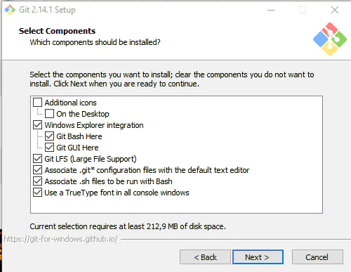
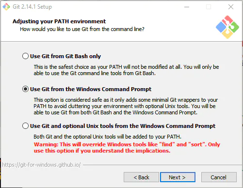
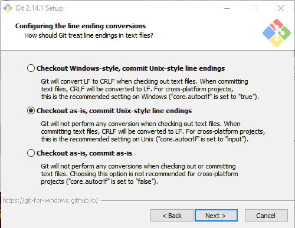

Instalação do Git no Windows
No site oficial do Git (http://git-scm.com/) clique em “Downloads for Windows”.

Execute o arquivo baixado e vá dando “Next” até a tela “Select Components”. Nesta tela eu escolho as opções como na imagem:
Em especial eu marco as opções em “Windows Explorer integration”, assim eu consigo abrir o prompt de comandos do Git (Git Bash) em qualquer pasta, basta clicar com o botão direito e “Git Bash Here”. A última opção também é interessante, porque ele instala uma fonte melhorzinha para o prompt de comandos. Nota: O Git para Windows vem com um prompt de comandos próprio (o Git Bash), que além dos comandos git também fornece alguns comandos Unix que podem ser bem úteis (além de ser bem mais bonitinho que o prompt de comandos padrão do Windows). Na próxima tela, eu escolho a opção: “Use Git from the Windows Command Prompt”.
Esta opção permite usar o comando git tanto no Git Bash quanto no terminal padrão do Windows. A terceira adiciona comandos do Unix no terminal do Windows, além do próprio comando git, mas alguns comandos do Windows serão substituídos por comandos Unix que tem o mesmo nome (como find e sort). Outra configuração importante: quebra de linhas.
Como deve saber Windows e sistemas Unix (Linux, Mac) possuem formatos diferentes de quebra de linha em arquivos texto. Se você escreve um código com quebras de linha no formato Windows, outra pessoa pode ter problemas ao abrir o mesmo arquivo em um Linux, e vice-versa. Esta opção permite normalizar isso. A primeira opção converte os arquivos para padrão Windows quando os arquivos chegam para você, e convertem para padrão Unix quando você os comita no repositório. A segunda não faz nenhuma conversão quando os arquivos chegam, mas convertem para padrão Unix quando você comita. Já a terceira opção não faz nenhuma conversão. Eu opto pela segunda, pois prefiro manter tudo no padrão Unix (já que qualquer bom editor de código consegue ler arquivos no padrão Unix mesmo estando em Windows). Feito isso, “Next”, “Finish” e o Git está instalado.